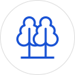
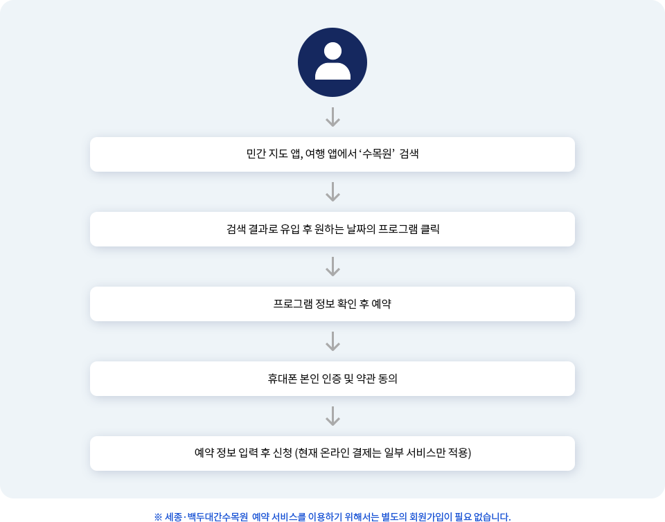
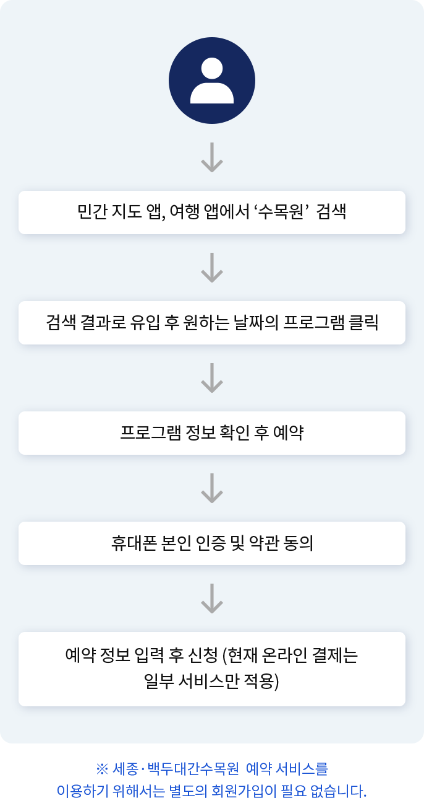

숲을 누리다.
행복을 나누다.
세종·백두대간수목원 예약
숲을 누리다.행복을 나누다.
국립백두대간수목원은 백두대간과 고산 지역 산림생물자원을 수집·보전·전시·활용하여 생물 다양성을 증진하고, 다양한 관람 및 교육·체험 서비스 제공을 목적으로 2017년 5월 17일자로 출범한 한국수목원정원관리원 소속기관입니다. 국립세종수목원은 국내 최대 식물 전시 유리 온실인 사계절 온실과 한국전통정원, 금강에서 가져온 원수로 수로를 조성해 습지 생태를 관찰할 수 있는 학습의 장인 청류지원, 분재원을 보유하고 있는 국내 최초의 도심형 국립수목원입니다.

국립백두대간수목원은 아시아 최대, 전 세계 두 번째 규모의 수목원으로, 백두대간 및 고산 지역 산림생물자원 보전에 특화된 수목원입니다.
국립세종수목원은 국내 최대 식물 전시 유리 온실인 사계절 온실을 비롯한 여러 테마 전시실을 갖춘 도심형 국립수목원입니다.
국립백두대간수목원은 축구장 6개 크기의 백두산 호랑이숲을 보유하여 국내에서 가장 넓은 사육환경을 갖추고 있습니다.
-

수목원 예약/결제
국민들이 일상적으로 이용하는
앱을 통해
빠르고 간편하게
백두대간 수목원예매가 가능합니다. -
해설·교육 예약
세종수목원에서 체험할 수 있는 해설,
다양한 교육 프로그램, 장내에서 운영되는
전기버스 예약이 가능합니다. -
체류·체험 예약
백두대간 수목원에서 할 수 있는 해설,
체류(가든스테이), 체험 등의
프로그램을 예약할 수 있습니다.
사용자 서비스 이용 프로세스
민간 채널을 통해 세종·백두대간수목원 예약 서비스를 이용하는 사용자들은 다음과 같은 과정을 거치게 됩니다. 서비스를 이용하기 위해 개별적인 앱/웹을 설치해야 했던 기존의 방법에서 벗어나, 평소 친숙하게 사용하던 민간 앱을 이용해 프로세스를 시작하고 마무리할 수 있습니다.
 